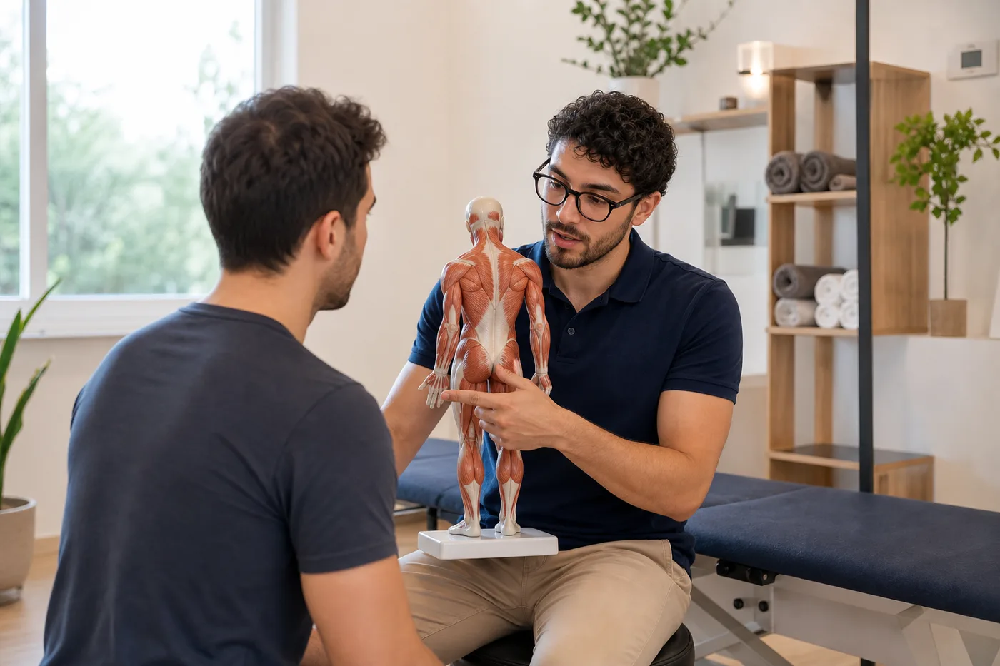
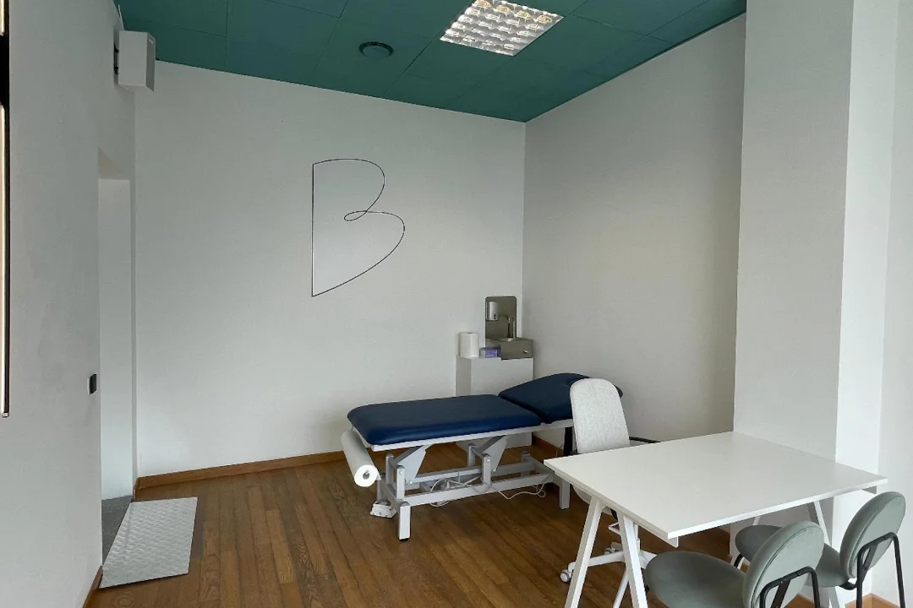

I trattamenti
Scegli dal problema, non dal nome.
Recupero sportivo, tensioni, gonfiore, stress o benessere generale: parto dall'obiettivo, osservo la risposta del corpo e costruisco la seduta con la tecnica più utile.
Guida rapida
Dimmi cosa senti. Ti porto al servizio giusto.
Il nome del trattamento arriva dopo. Prima contano zona, intensità, sport, abitudini e obiettivo della seduta.
"Mi alleno"
Carico muscolare, recupero o gara vicina.
Massaggio sportivo"Sento rigidità"
Collo, schiena, spalle o lombare contratti.
Trattamento terapeutico"Mi sento pesante"
Gonfiore, ristagno o bisogno di leggerezza.
Drenaggio linfatico"Cerco equilibrio"
Rilassamento, piedi, percezione corporea.
Riflessologia plantare"Ho stress"
Tensione generale, stanchezza, bisogno di calma.
Benessere e relaxI cinque trattamenti
Cinque percorsi chiari, adattati alla persona.
Ogni scheda spiega quando ha senso scegliere quel trattamento e cosa aspettarti dalla seduta.
Massaggio sportivo
Scarico, recupero, preparazione e supporto alla mobilità per chi pratica sport o accumula carichi.
Apri trattamentoMassaggio terapeutico
Lavoro mirato su tensioni e rigidità ricorrenti, con dialogo e progressione.
Apri trattamento
Drenaggio linfatico
Manualità leggere e lente per favorire leggerezza e comfort corporeo.
Apri trattamento
Riflessologia plantare
Stimolazione del piede per rilassamento e ascolto corporeo.
Apri trattamentoBenessere e relax
Per ridurre tensione generale e recuperare calma fisica dopo periodi intensi.
Apri trattamentoIl metodo
La seduta ha una struttura semplice.
Sai sempre cosa succede prima, durante e dopo il trattamento.
Racconto
Zona, sintomo, sport, lavoro, abitudini e obiettivo.
Osservazione
Mobilità, tono, sensibilità e risposta al contatto.
Manualità
Tecnica scelta e modulata in base alla persona.
Continuità
Indicazioni essenziali e prossimo passo se serve.
Serietà
Quando serve prudenza, viene prima la sicurezza.
Per dolore acuto, trauma recente, febbre, gonfiore improvviso, sintomi neurologici o condizioni mediche specifiche, confrontati prima con medico o fisioterapista. Il trattamento manuale non sostituisce diagnosi o terapia sanitaria.
Prenotazione
Se non sai da dove partire, parti dal sintomo.
Racconta cosa senti, quando compare e cosa vuoi ottenere. Ti indirizzo verso il trattamento più adatto, o combino più tecniche nella stessa seduta.